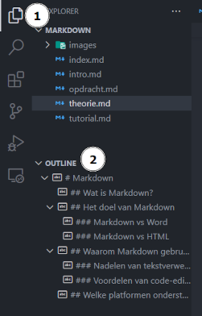
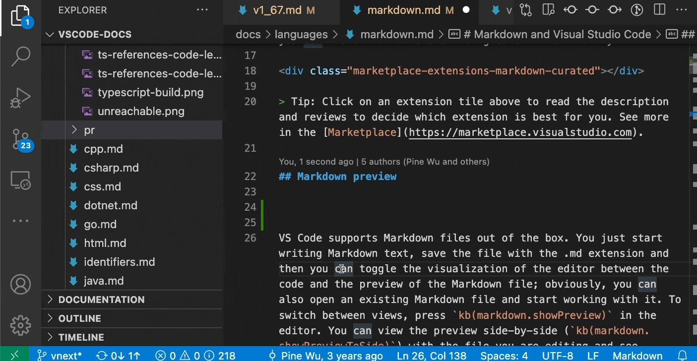

Een Markdown bestand maken
- Maak een nieuw bestand en geef het de .md of .markdown extensie.
- Schrijf tekst in de Markdown-syntax, in je favoriete code-editor.
Syntax
Exporteren
Pandoc Online
Pandoc Online is de makkelijkste optie, maar je kan maar 1 Markdown bestanAfbeeldingd tegelijk exporteren, en afbeeldingen werken niet.
Pandoc Command Line Tool
Installatie
- Surf naar pandoc.org, en installeer de laatste versie (voor Windows moet je het .msi bestand downloaden).
- Herstart je computer.
- Om te testen of de installatie gelukt is open je een terminal:
- Windows PowerShell:
Start > Windows PowerShell - VS Code:
ctrl + shift + p > Create New Terminal
Voer dit command uit:
pandoc --version, als je geen error krijgt is de installatie gelukt. - Windows PowerShell:
Gebruik
- Open een terminal op de plek van je Markdown bestanden:
- Windows PowerShell:
Rechter klik > Openen in Terminal - VS Code:
ctrl + shift + p > Create New Terminal
- Windows PowerShell:
pandoc index.md -s -o index.docx-s: Deze vlag staat voor “standalone”. Het wordt gebruikt om een volledig document te genereren, in plaats van een fragment van een document.-o index.docx: Deze vlag geeft het “output” bestand.
Markdown & VS Code
Hieronder enkele handige tips om met Markdown te werken in VS Code. Voor nog meer tips kan je terecht in de officiële VS Code documentatie.
Outline overview
De Outline View onderaan de File Explorer toont de structuur van het open Markdown bestand en kan dienen als een soort inhoudstafel.

Afbeeldingen slepen
Vanuit de File Explorer kan je afbeeldingen slepen met de shift toets, vergeet niet de alt text aan te passen.

Last edited: 03/05/2024
Created: 04/03/2024
Created: 04/03/2024